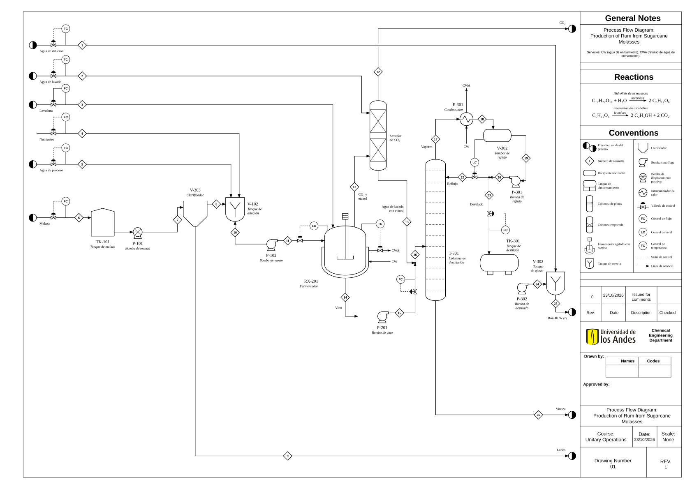

Análisis de un diagrama de flujo de proceso
Una planta de ron a partir de melaza, dibujada con errores sembrados. Su trabajo es leerla, encontrarlos y explicar cómo debe estar diseñada para que se pueda construir y operar.
El diagrama que va a analizar es el PFD de una planta de producción de ron a partir de melaza de caña, dibujado sobre la plantilla de planos del Departamento. Está dibujado con el nivel de detalle de un PFD: equipos con su código, corrientes de proceso numeradas, servicios con su código, lazos de control, las reacciones y el cuadro de convenciones. También tiene errores sembrados a propósito, unos de dibujo y otros de ingeniería. Encontrarlos es la mitad del taller. La otra mitad es explicar cómo debe estar diseñada esa planta para que se pueda construir y operar.
La inteligencia artificial se usa para hacer lluvia de ideas, estructurar el trabajo y orientar la búsqueda de fuentes. Usted parte de esas sugerencias y desarrolla el trabajo con su propio juicio. El contenido final debe estar desarrollado por usted: no se entrega texto generado por IA. La declaración de uso va con el entregable.
En clase se trabajan las Partes 1 y 2 completas y lo que alcance de la Parte 3. El resto queda como trabajo autónomo de la pareja hasta el domingo. La entrega es una sola por pareja.
Este taller se hace en parejas de libre elección. En los talleres siguientes no podrá repetir compañero: la idea es que a lo largo del semestre trabaje con varias personas distintas antes de la entrega final del proyecto.
0. El diagrama
El plano es una hoja A2, y buena parte de lo que hay que revisar no se lee a tamaño de página: códigos, números, flechas, servicios y señales. Use el zoom. Haga clic sobre el diagrama, o tóquelo en el celular, para abrirlo a pantalla completa. Ahí se acerca con la rueda del ratón, con dos dedos o con los botones + y −, se desplaza arrastrando, vuelve a la vista completa con «Todo» y cierra con la × o con la tecla Esc.
El PFD va en la página que sigue a esta sección, girado para que quepa a lo largo de la hoja. En papel carta los rótulos quedan muy pequeños: para leerlo y marcar los errores use el archivo del diagrama en A2, Taller_01_PFD.pdf, que se publica con este taller y se lee completo al acercarse.

Varios de los «errores» que se reportan todos los semestres no lo son: son rótulos que a tamaño reducido no se alcanzan a leer. Verifique con el zoom antes de escribir.
Con las de la Lectura 02: las letras de Turton para cada clase de equipo (C, E, H, P, R, T, TK y V, en la Tabla 2), las reglas de las corrientes (sección 4.3), los códigos de servicio con su retorno (Tabla 4) y los lazos de control y alivios (sección 4.6). Lea primero el cuadro de convenciones del plano, que es la leyenda de este diagrama, y tenga la lectura abierta mientras trabaja.
1. Comprensión general 15 puntos
En todo el taller, nombre cada equipo por su función («el fermentador», «el tambor de reflujo») y, si quiere, agregue el código que lleva en el plano, copiado tal como aparece. Un código o un número puede estar errado, y la función es lo que permite saber de qué equipo habla.
1.1 Descripción del proceso 8 pts
En un párrafo, responda:
- ¿Cuál es el propósito de esta planta según el diagrama? ¿Qué producto sale y con qué especificación?
- ¿Qué transformaciones ocurren y en qué equipo ocurre cada una? Distinga las reacciones del cuadro de la derecha de los cambios físicos: separaciones, diluciones, cambios de temperatura.
- ¿Cuáles son las tres operaciones unitarias principales?
Acompañe el párrafo con el PBD de la planta: un bloque por cada área del plano (100, 200 y 300) con el nombre de su operación, las materias primas a la izquierda, los productos a la derecha y cada reacción anotada en el bloque donde ocurre.
1.2 Trazado 7 pts
- Siga el azúcar que entra con la melaza hasta el etanol del ron que sale de la planta. Liste, en orden, los equipos por los que pasa y el número de cada corriente intermedia, tal como aparece en el plano, y diga en qué equipo el azúcar se convierte en etanol. Si algo del recorrido no cuadra, anótelo para la Parte 2.
- Parte del etanol sale del fermentador arrastrado por el CO₂. ¿Qué equipo lo recupera y por dónde vuelve al proceso?
- ¿Cuáles son las materias primas y cuáles los productos y las salidas del proceso? Distinga producto de subproducto y de residuo.
2. Análisis de transporte 30 puntos
2.1 Errores del diagrama 14 pts
El diagrama tiene 15 errores sembrados. Revíselo equipo por equipo y conexión por conexión, con la leyenda del plano y la Lectura 02 a la mano. Liste al menos 10 errores, y para cada uno indique dónde está, por qué es un error y cómo se corrige. Márquelos además sobre una imagen del PFD, cada uno con el mismo número que lleva en su lista.
Formato sugerido. Una fila por error. Para decir dónde está, nombre el equipo por su función y diga de qué corriente, servicio o lazo se trata, con lo que se lee en el plano.
| N.º | Dónde está | Por qué es un error | Cómo se corrige |
|---|---|---|---|
| 1 | |||
| 2 | |||
| … |
La pareja que identifique y marque correctamente 13 o más de los 15 errores recibe +0,5 sobre la nota final del taller que elija. Un elemento que está bien dibujado y se reporta como error descuenta uno del conteo.
Si encuentra algo que no está mal dibujado, pero que le falta al diseño de la planta para que se pueda construir y operar, repórtelo aparte, después de su lista de errores, con su justificación. No descuenta y da puntos extra.
Descargue el PDF del diagrama y marque cada error con un círculo y su número, en cualquier lector de PDF que permita anotar o sobre una captura. También puede imprimirlo en A3 o en A2 y escanearlo. Lo que importa es que cada marca se lea y corresponda a una fila de su lista.
2.2 Del fermentador a la columna 6 pts
- Entre el fermentador y la columna de destilación, ¿qué operación unitaria agregaría y por qué es necesaria? Piense en lo que trae el vino además de agua y etanol, y en la temperatura a la que sale del fermentador.
- ¿Qué le pasa al equipo que ya está instalado en ese tramo si esa operación no se agrega? Piense en la bomba, en la válvula de control y en los platos de la columna.
2.3 El sistema de la columna 10 pts
- ¿Cómo llega la alimentación a la columna de destilación? Diga qué corrientes la forman, qué equipo la mueve y qué lazo la regula.
- ¿Cómo llega el reflujo del tambor de reflujo a la cima de la columna? ¿Qué lo mueve, y qué decide cuánto líquido vuelve a la columna y cuánto sale como destilado?
- ¿Podría llegar el reflujo por gravedad? Diga qué tendría que cumplir la altura del tambor respecto a la cima de la columna, si esa altura se puede leer en un PFD y por qué en la mayoría de las plantas el reflujo se bombea.
- ¿Qué bombas necesita esta planta y por qué? Recorra el diagrama y, en cada tramo donde un líquido pasa de un equipo a otro, decida si hace falta una bomba: piense en la presión y la altura a las que tiene que llegar el líquido, y en qué lo movería si no la hubiera. Complete la tabla con todas las bombas que la planta necesita, estén o no en el dibujo, sin repetir ninguna, y agregue las filas que haga falta.
| De dónde a dónde | Fluido | Por qué hace falta | Tipo sugerido y por qué | ¿Está en el dibujo? |
|---|---|---|---|---|
3. Foco en destilación 25 puntos
3.1 Componentes 5 pts
- ¿Qué equipos componen el sistema de destilación y qué papel cumple cada uno?
- ¿Cómo debe estar conectado cada uno en un diseño correcto? Diga qué corrientes de proceso y de servicio entran y salen de cada equipo y compárelo con el dibujo. Si algo no coincide, explique por qué y cuéntelo también en la lista de la Parte 2.1.
3.2 La separación en la columna 8 pts
- ¿Qué se está separando y de qué composición se parte, aproximadamente?
- ¿Hasta dónde puede llegar la concentración de etanol en la cima a 1 atm? Dé el valor numérico, en fracción molar y en porcentaje en masa, y diga qué fenómeno lo limita.
- ¿Por qué una columna de platos y no una empacada, para este servicio? ¿Y por qué el lavador de CO₂ sí puede ser empacado?
- Si el proceso necesitara etanol al 99,9 %, ¿qué alternativas tendría? Mencione al menos dos y diga qué las diferencia.
3.3 Control 6 pts
- ¿Qué variables se controlan en el sistema de destilación y con qué lazo cada una? Para cada uno de esos lazos, diga qué mide, qué válvula mueve y por qué ese par tiene sentido.
- ¿Cómo se controla la presión de la columna? Diga dónde la mediría, qué movería para regularla y si el diagrama muestra ese control.
- Además de la seguridad, ¿por qué importa ese control para la separación?
3.4 Información faltante 3 pts
Liste cinco datos de operación que necesitaría para dimensionar y operar esta columna, y diga en qué parte de un PFD completo deberían aparecer.
3.5 Corrientes de servicio 3 pts
- ¿Qué son las corrientes de servicio y en qué se distinguen de las de proceso, en lo que llevan y en cómo se dibujan?
- Para cada equipo que calienta o enfría, diga qué servicio necesita según la temperatura a la que trabaja, con su código de entrada y de retorno como en la Tabla 4 de la Lectura 02, y compárelo con lo que muestra el dibujo.
- ¿Hay equipos que necesitarían un servicio que el diagrama no muestra? Diga cuáles, qué servicio y por qué.
4. Operabilidad y seguridad 20 puntos
Esta parte exige sustento bibliográfico. Vea los requisitos de fuentes en los entregables.
4.1 Materiales 4 pts
- ¿Para qué se usan los nutrientes que entran al proceso?
- ¿Para qué se usa la levadura y qué determina cuánta se agrega?
4.2 Control 5 pts
- ¿Dónde añadiría puntos de control para mejorar la seguridad del proceso?
- ¿En qué situaciones conviene una válvula manual y en cuáles una automatizada?
4.3 Seguridad 7 pts
- ¿Qué escenario concreto llevaría a una sobrepresión en el fermentador? Piense en qué tendría que fallar.
- ¿Qué elemento de seguridad necesita un fermentador que libera CO₂, dónde va y a dónde descarga? ¿Lo muestra el diagrama? No confunda elemento de seguridad con lazo de control.
- ¿Cuál es la diferencia entre un PC y una PSV, y por qué uno no reemplaza al otro?
- Según la regla de la Lectura 02 (sección 4.6), ¿qué otros equipos de esta planta llevarían PSV?
- Dibuje a mano alzada el fermentador como aparecería en un P&ID: su lazo de temperatura descompuesto en los instrumentos ISA-5.1 que lo forman y la PSV con su destino, como el separador de la Figura 3 de la Lectura 02.
4.4 Análisis económico 4 pts
- ¿Qué factores determinan si conviene instrumentar toda la planta o solo las etapas críticas?
- ¿Cuándo conviene recuperar un subproducto en vez de purgarlo? Aplique el criterio a una corriente concreta de este diagrama y sustente con un orden de magnitud.
5. Entregables y formato 10 puntos
- Un solo documento en PDF por pareja, llamado
Taller_01_Apellido1_Apellido2.pdf, con nombre y código de los dos integrantes. Se sube a Bloque Neón a más tardar el domingo de la semana 2, a las 11:59 p. m. - Respuestas a todas las preguntas, en el orden del enunciado.
- Imágenes del PFD con los errores marcados y numerados, de modo que se vea a qué fila de la lista de la Parte 2.1 corresponde cada marca.
- Fuentes. La Parte 4 se sustenta con al menos tres referencias citadas en el texto, de las cuales al menos una debe ser un libro de texto o una norma técnica. No se aceptan como única fuente páginas de divulgación, entradas de enciclopedia ni catálogos comerciales.
- Declaración de uso de IA generativa, indicando en qué se usó y con qué instrucciones.
Se pierden completos si falta la declaración de uso de IA, si no hay figuras marcadas o si la Parte 4 no trae citas. No es un premio por presentación bonita: es el requisito mínimo de un entregable de ingeniería.